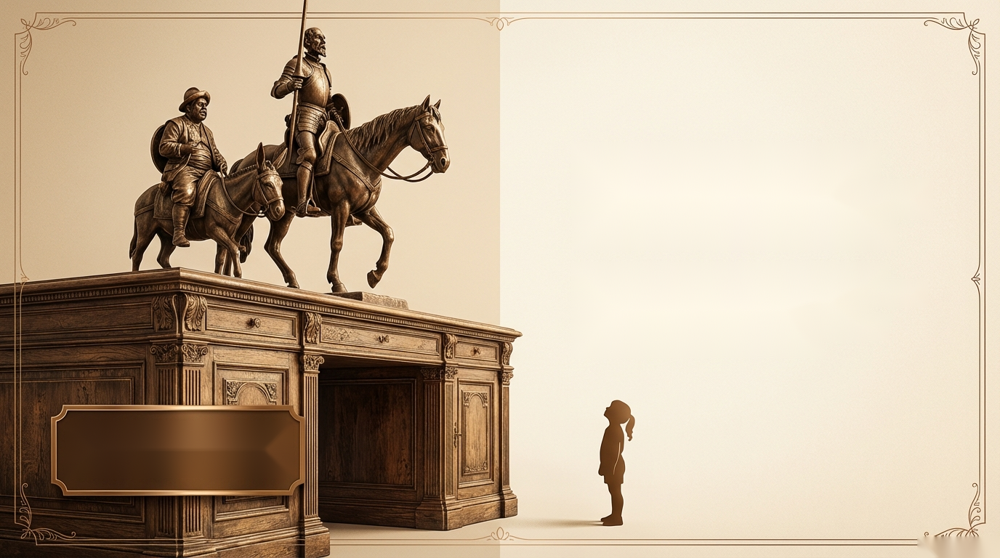
Ana Maria Machado mal chegava à altura da escrivaninha do pai quando conheceu as gravuras de Gustavo Doré. O pai apresentou o livro grandalhão e prometeu contar a história aos poucos. Ela nunca mais esqueceu.
"Leituras feitas cedo ficam. Ficam fundo."
A genialidade não os fez ler os clássicos. Ler os clássicos cedo ajudou a formar a genialidade.
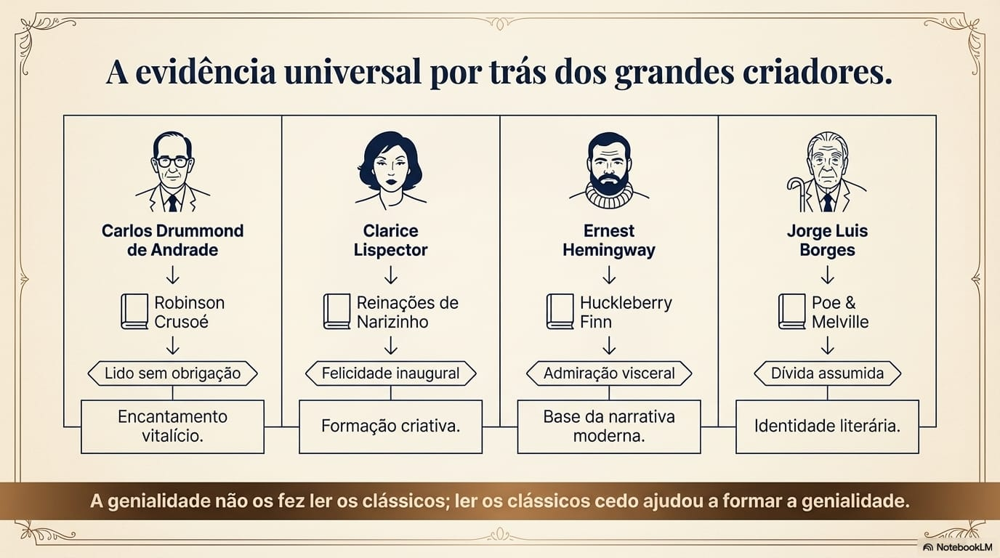
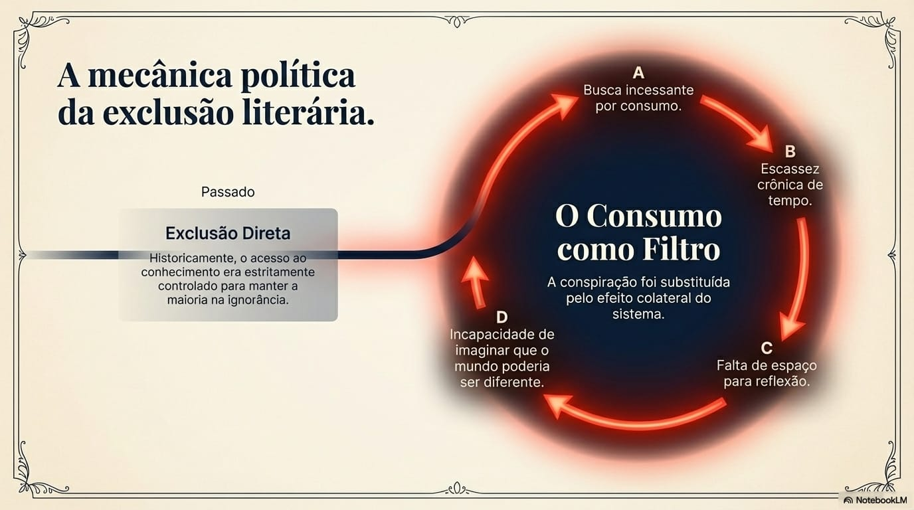
"Ler não é um passatempo.
É uma recusa ao imediatismo."
A leitura de um clássico é um ato de resistência política. Ela interrompe a corrida do consumo e devolve ao indivíduo a capacidade de imaginar mundos alternativos.
O clássico exige os exatos recursos que o sistema tenta sequestrar: tempo e reflexão.
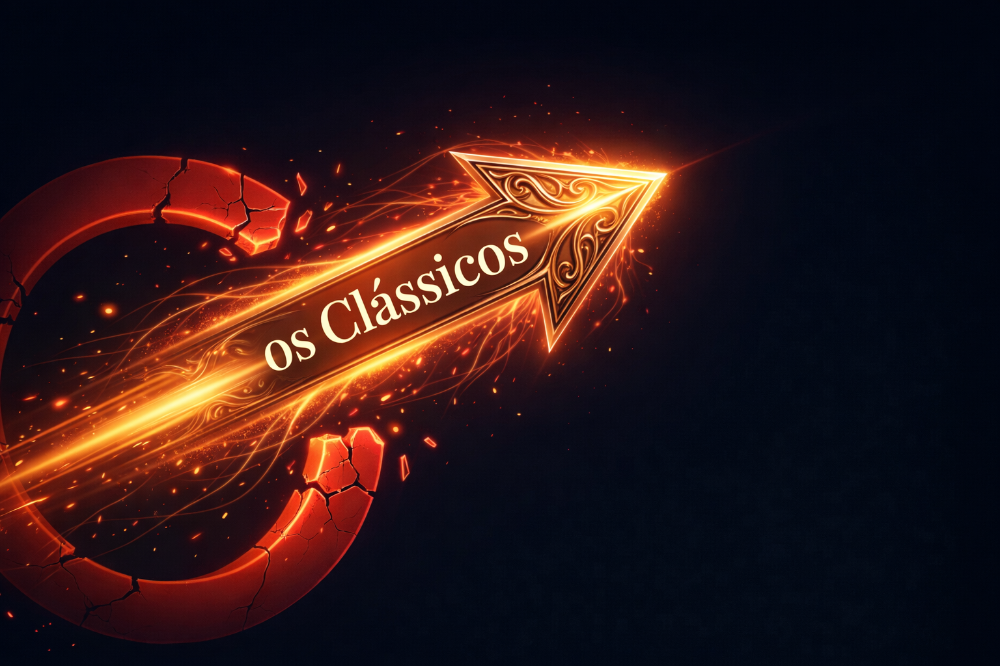
Recusar a versão fácil do prazer é o primeiro passo para a literatura.
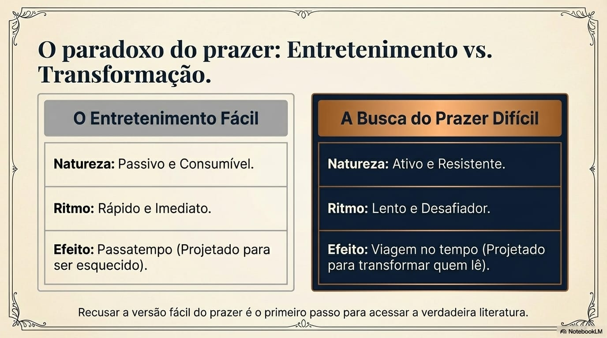
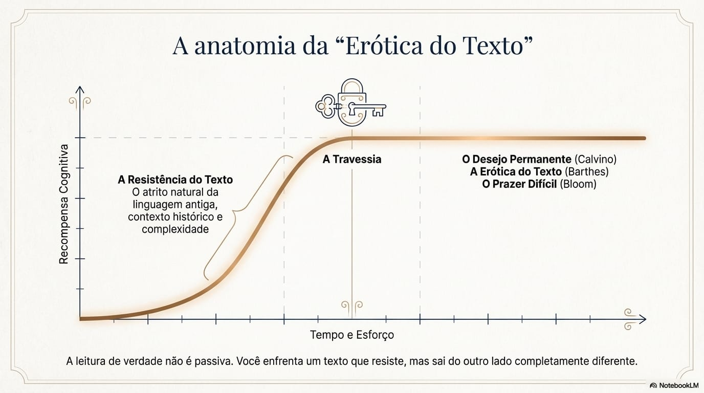
"Obrigar alguém a ler é vacinar o sujeito contra a leitura para sempre."
— Monteiro Lobato
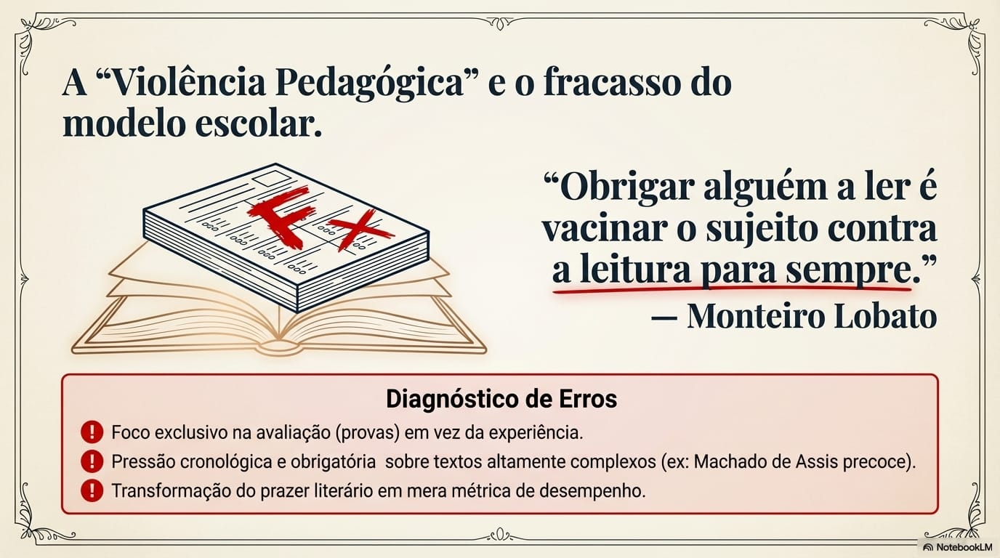
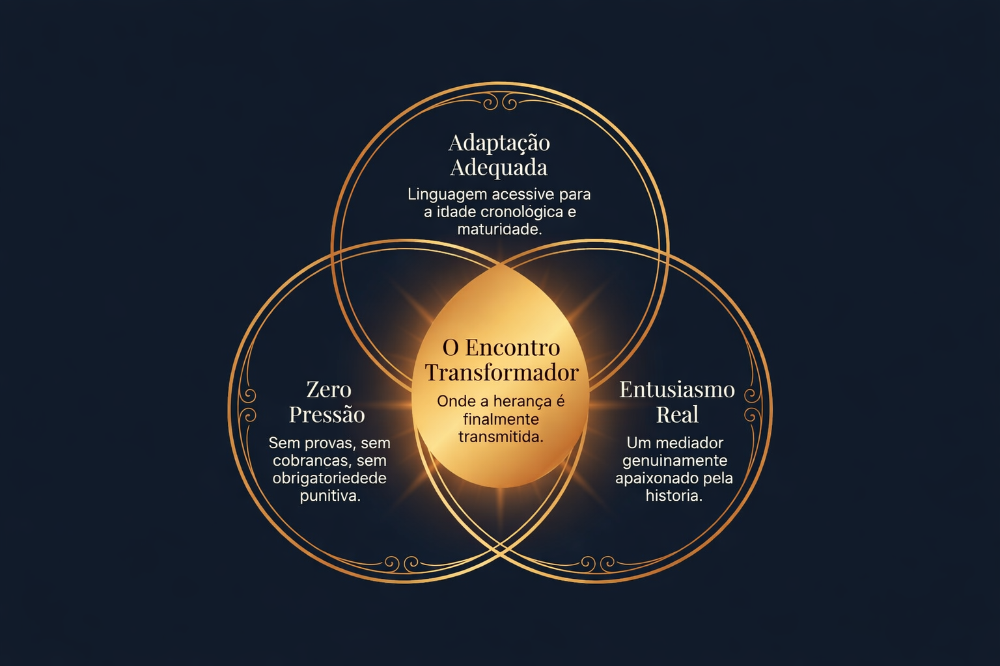
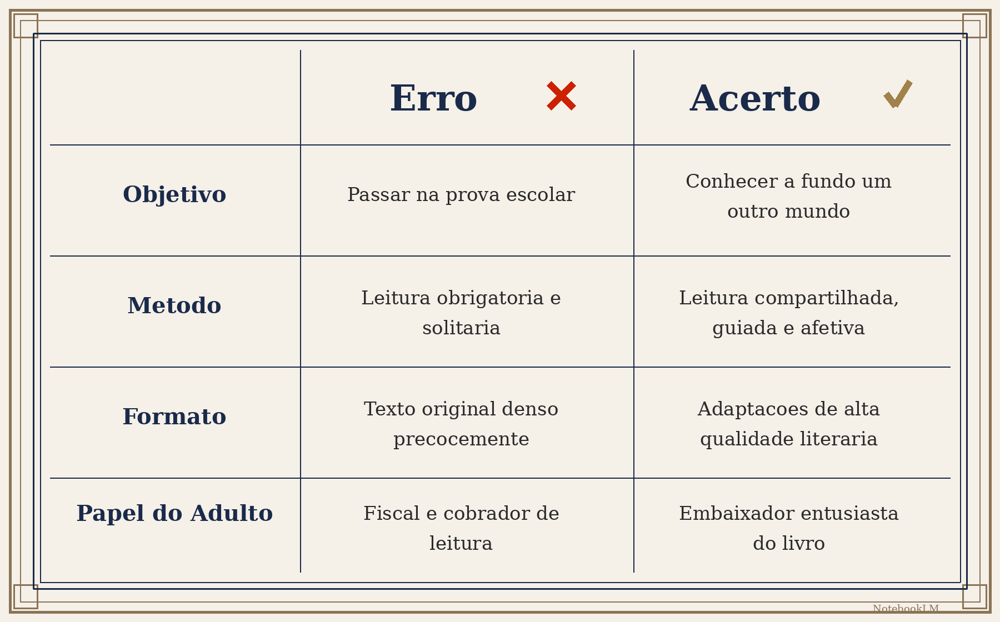
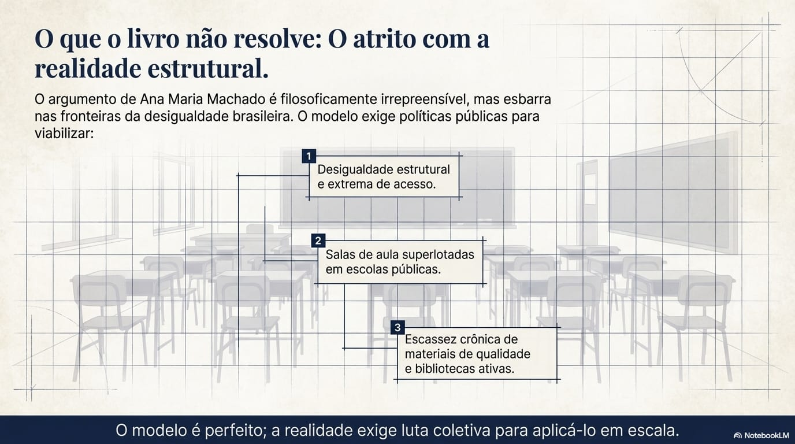
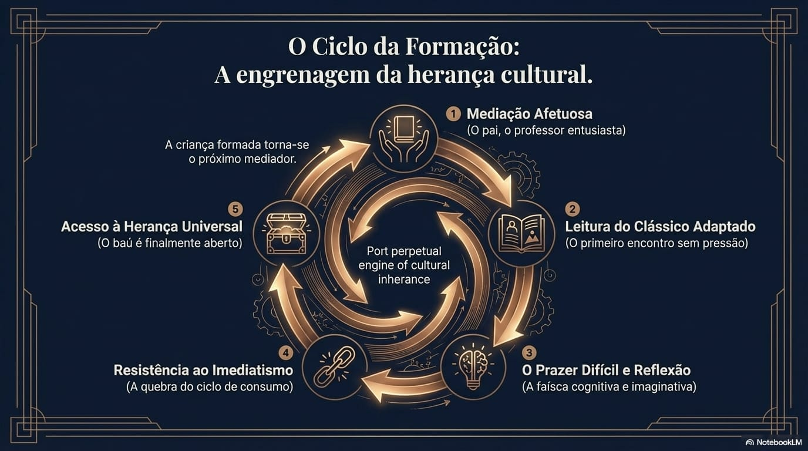
Os clássicos não são um teste de inteligência escolar.
São o nosso testamento coletivo.
Apresentá-los cedo, com afeto e sem violência pedagógica,
é garantir que a próxima geração receba a sua herança por direito.
Carregando respostas...
Para visualizar melhor as imagens, toque ou clique nelas